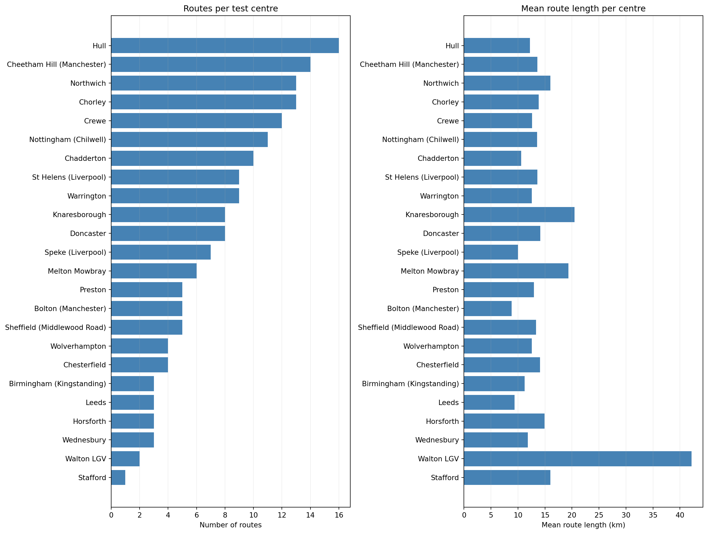
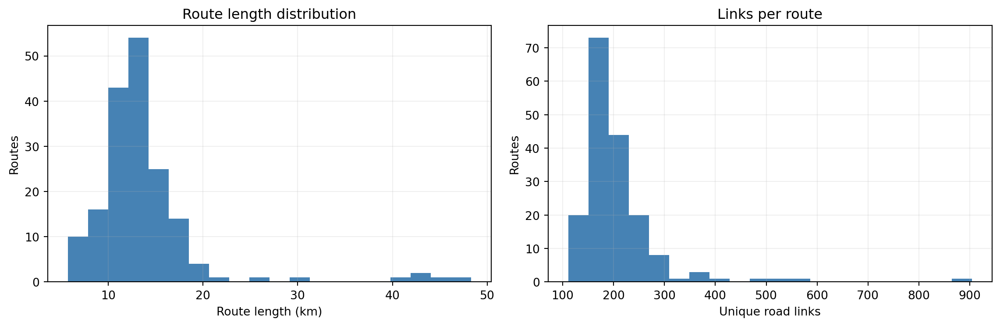
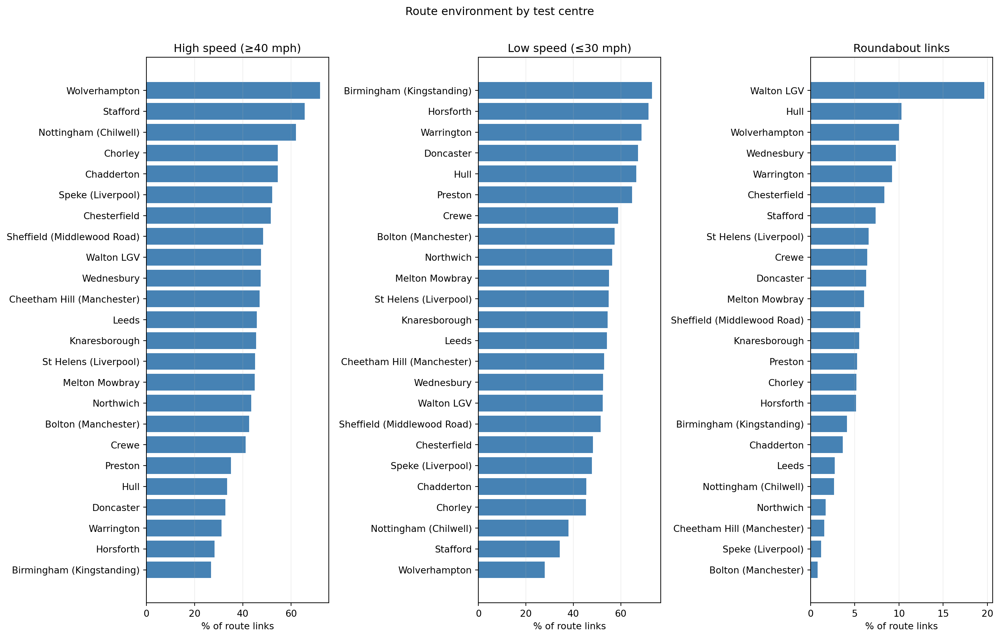
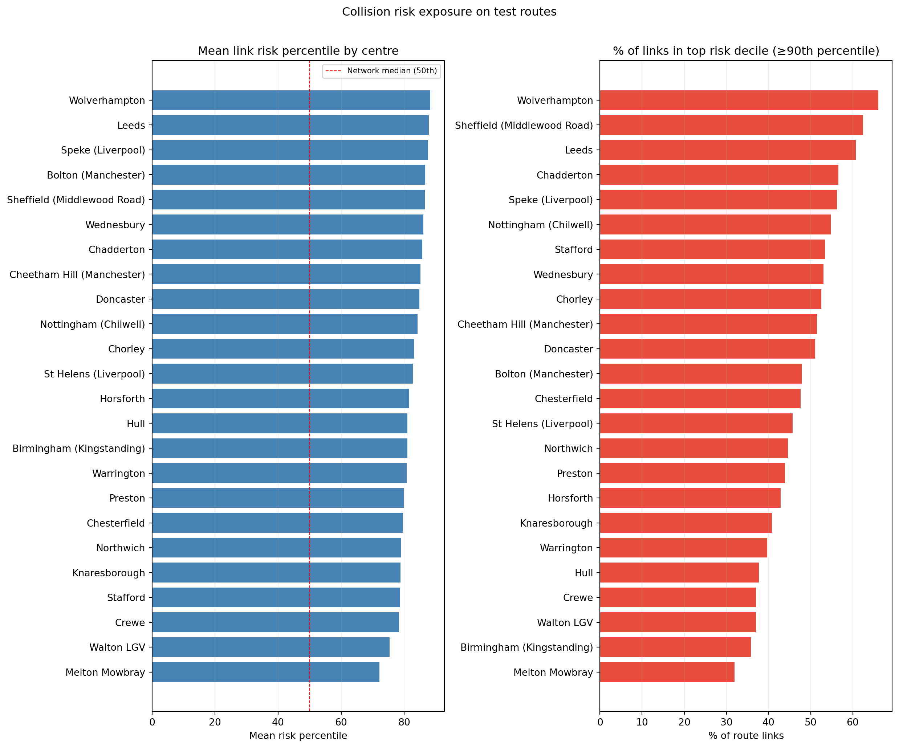
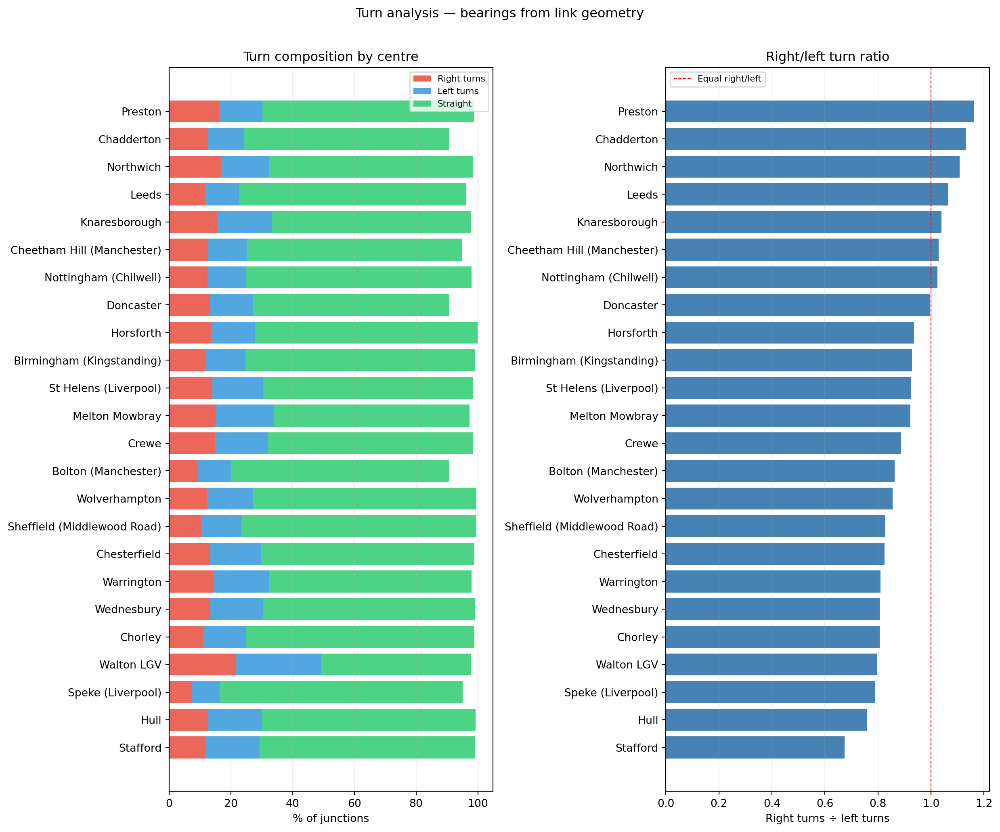
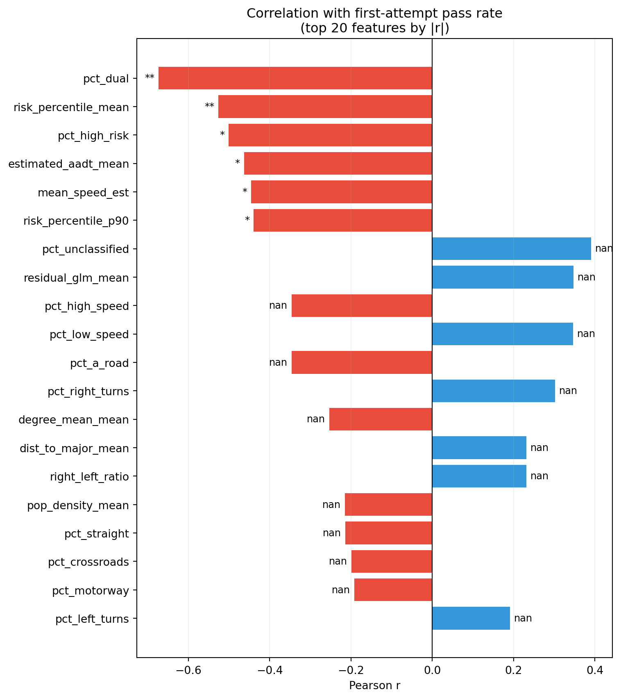
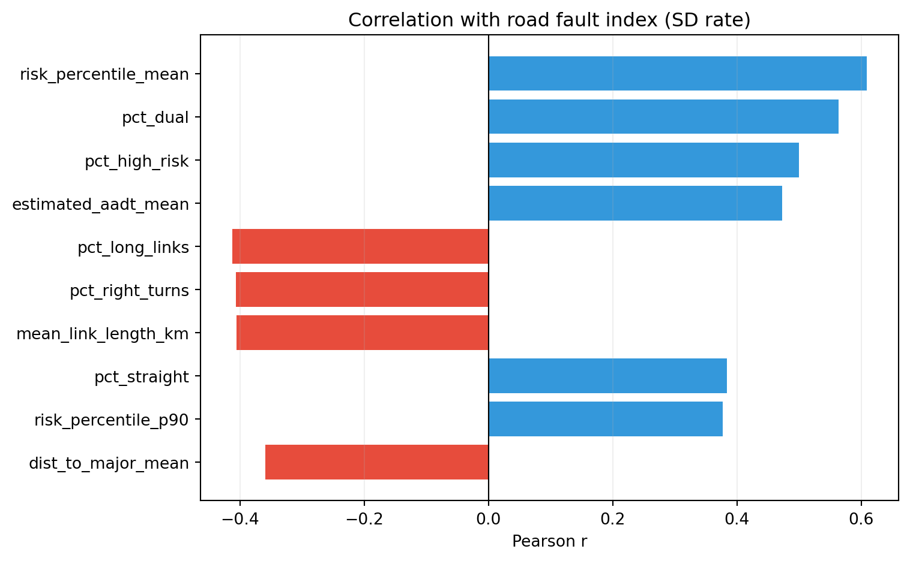

Routes : 174 | Centres: 24
DTC feats : 24 rows × 40 cols
Risk scores: 2,167,557 linksDriving Test Route Analysis
1 Overview
This page analyses crowdsourced driving test routes from centres across the study area. Routes are snapped to the OS Open Roads network and scored against the collision risk model. The goal is to understand whether the road environment of a test centre’s routes is associated with its DVSA pass rates and fault patterns.
See Test Route Methodology for details on how routes are processed and features are computed.
For the DVSA outcome context behind this sub-project, see DVSA FOI Test-Centre Findings. That page summarises Jake Cracknell’s 2023 FOI analysis and frames why route environment and centre-level fault patterns are worth linking.
2 Route coverage

dtc_name n_routes source mean_length_km mean_links
Hull 16 gpx 12.216875 175.750000
Cheetham Hill (Manchester) 14 gmaps/gpx 13.582857 272.500000
Northwich 13 gpx 16.013846 213.153846
Chorley 13 gpx 13.846154 204.384615
Crewe 12 gpx 12.604167 191.416667
Nottingham (Chilwell) 11 gpx 13.517273 252.636364
Chadderton 10 gmaps 10.608000 174.100000
St Helens (Liverpool) 9 gpx 13.597778 215.000000
Warrington 9 gpx 12.555556 196.888889
Knaresborough 8 gpx 20.472500 201.750000
Doncaster 8 gmaps 14.147500 185.125000
Speke (Liverpool) 7 gmaps 9.977143 163.142857
Melton Mowbray 6 gpx 19.325000 216.166667
Preston 5 gpx 12.952000 254.200000
Bolton (Manchester) 5 gmaps 8.836000 173.000000
Sheffield (Middlewood Road) 5 gpx 13.326000 174.400000
Wolverhampton 4 gpx 12.567500 162.000000
Chesterfield 4 gpx 14.072500 264.000000
Birmingham (Kingstanding) 3 gpx 11.240000 156.666667
Leeds 3 gmaps/gpx 9.363333 194.666667
Horsforth 3 gpx 14.906667 200.000000
Wednesbury 3 gpx 11.800000 158.333333
Walton LGV 2 gpx 42.160000 395.000000
Stafford 1 gpx 16.020000 247.000000
3 Road environment by centre

Road environment features by centre:
dtc_name n_routes pct_roundabout pct_dual pct_high_speed pct_low_speed pct_right_turns pct_left_turns right_left_ratio n_roundabouts mean_speed_est
Hull 16 10.3 13.3 33.5 66.5 12.8 17.3 0.76 16.62 34.23
Cheetham Hill (Manchester) 14 1.6 6.7 47.0 53.0 12.6 12.5 1.03 5.00 36.49
Northwich 13 1.7 5.4 43.6 56.4 16.8 15.7 1.11 3.15 35.98
Chorley 13 5.2 8.8 54.6 45.4 11.0 13.9 0.81 8.69 36.80
Crewe 12 6.4 2.3 41.2 58.8 15.0 17.1 0.89 10.92 34.89
Nottingham (Chilwell) 11 2.7 13.2 62.1 37.9 12.5 12.6 1.02 5.27 37.19
Chadderton 10 3.7 19.5 54.5 45.5 12.7 11.5 1.13 6.20 38.28
St Helens (Liverpool) 9 6.6 10.1 45.1 54.9 14.0 16.5 0.92 12.44 35.74
Warrington 9 9.2 9.8 31.2 68.8 14.5 17.8 0.81 15.33 33.27
Knaresborough 8 5.5 0.8 45.5 54.5 15.5 17.9 1.04 9.38 36.12
Doncaster 8 6.3 14.9 32.7 67.3 13.3 14.0 1.00 11.00 35.21
Speke (Liverpool) 7 1.2 50.3 52.2 47.8 7.3 9.1 0.79 1.71 38.17
Melton Mowbray 6 6.1 8.8 44.9 55.1 15.1 18.8 0.92 10.00 36.39
Preston 5 5.3 13.4 35.2 64.8 16.3 13.9 1.16 9.40 33.16
Bolton (Manchester) 5 0.8 11.1 42.6 57.4 9.2 10.9 0.86 1.20 34.88
Sheffield (Middlewood Road) 5 5.6 15.7 48.4 51.6 10.4 13.1 0.83 7.80 37.97
Wolverhampton 4 10.0 19.7 72.0 28.0 12.4 14.9 0.85 14.00 42.50
Chesterfield 4 8.4 7.4 51.7 48.3 13.2 16.6 0.82 17.25 34.98
Birmingham (Kingstanding) 3 4.1 17.6 26.8 73.2 11.8 12.9 0.93 5.67 30.64
Leeds 3 2.7 27.0 45.9 54.1 11.5 11.1 1.06 5.67 34.82
Horsforth 3 5.1 6.6 28.2 71.8 13.5 14.4 0.94 9.33 32.68
Wednesbury 3 9.6 13.2 47.5 52.5 13.3 17.0 0.81 13.67 37.13
Walton LGV 2 19.6 7.1 47.6 52.4 21.6 27.5 0.80 43.00 37.72
Stafford 1 7.4 10.8 65.7 34.3 11.8 17.5 0.67 15.00 41.794 Risk scores on test routes

Risk scores by centre:
dtc_name n_routes risk_percentile_mean risk_percentile_p90 pct_high_risk residual_glm_mean estimated_aadt_mean
Wolverhampton 4 88.3 98.8 66.1 -1.766 10941
Leeds 3 87.8 98.6 60.8 -1.724 7490
Speke (Liverpool) 7 87.6 97.6 56.3 -1.902 7607
Bolton (Manchester) 5 86.7 98.2 47.9 -1.595 7190
Sheffield (Middlewood Road) 5 86.5 98.7 62.4 -1.885 8867
Wednesbury 3 86.0 98.4 53.0 -1.585 8708
Chadderton 10 85.8 98.4 56.6 -2.185 9134
Cheetham Hill (Manchester) 14 85.2 99.0 51.5 -2.173 7967
Doncaster 8 84.8 97.5 51.1 -0.975 6280
Nottingham (Chilwell) 11 84.3 97.7 54.7 -1.656 6953
Chorley 13 83.1 97.2 52.5 -1.503 6531
St Helens (Liverpool) 9 82.8 97.6 45.7 -1.602 7061
Horsforth 3 81.6 97.1 42.9 -1.310 6239
Hull 16 81.0 96.4 37.7 0.347 5676
Birmingham (Kingstanding) 3 81.0 97.6 35.8 -0.976 4280
Warrington 9 80.8 97.3 39.7 -1.028 6445
Preston 5 79.9 97.2 43.9 -1.062 5495
Chesterfield 4 79.6 96.8 47.6 -1.191 5478
Northwich 13 78.9 98.0 44.6 -1.702 6370
Knaresborough 8 78.9 97.0 40.8 -1.395 5998
Stafford 1 78.7 98.5 53.4 -1.922 8768
Crewe 12 78.4 96.7 37.0 -0.948 4950
Walton LGV 2 75.4 97.9 37.0 -1.353 5447
Melton Mowbray 6 72.2 96.6 31.9 -1.147 5405
Note
Risk percentile reflects historical collision rates on each link relative to the full network. A centre with a high mean percentile uses roads that, on average, have higher collision rates than most of the network. This does not mean those roads are dangerous during a test — risk scores are not conditioned on time of day or weather.
5 Turn complexity

6 Correlations with DVSA outcomes
Correlation table: 1,085 rows | Outcomes: 35 | Features: 316.1 Pass rate vs route features

Top correlates with first-attempt pass rate:
feature r p sig n
pct_dual -0.673 0.000 ** 23
risk_percentile_mean -0.526 0.010 ** 23
pct_high_risk -0.501 0.015 * 23
estimated_aadt_mean -0.463 0.026 * 23
mean_speed_est -0.445 0.033 * 23
risk_percentile_p90 -0.439 0.036 * 23
pct_unclassified 0.390 0.065 NaN 23
residual_glm_mean 0.347 0.105 NaN 23
pct_high_speed -0.346 0.106 NaN 23
pct_low_speed 0.346 0.106 NaN 23
pct_a_road -0.346 0.105 NaN 23
pct_right_turns 0.302 0.162 NaN 23
degree_mean_mean -0.253 0.244 NaN 23
dist_to_major_mean 0.231 0.288 NaN 23
right_left_ratio 0.231 0.289 NaN 23
pop_density_mean -0.215 0.325 NaN 23
pct_straight -0.214 0.326 NaN 23
pct_crossroads -0.199 0.364 NaN 23
pct_motorway -0.192 0.380 NaN 23
pct_left_turns 0.191 0.382 NaN 236.2 Road fault index

6.3 Junction-specific faults
--- minor_junctions_approach_speed_rate ---
feature r p sig n
dist_to_major_mean -0.352 0.099 NaN 23
residual_glm_mean -0.307 0.154 NaN 23
pct_complex_junction -0.287 0.184 NaN 23
pct_a_road 0.224 0.304 NaN 23
mean_speed_est 0.212 0.331 NaN 23
pct_high_speed 0.193 0.379 NaN 23
pct_low_speed -0.193 0.379 NaN 23
risk_percentile_p90 0.169 0.442 NaN 23
--- minor_junctions_observation_rate ---
feature r p sig n
pct_crossroads 0.399 0.059 NaN 23
right_left_ratio -0.397 0.061 NaN 23
degree_mean_mean 0.386 0.069 NaN 23
pct_t_junction -0.377 0.076 NaN 23
pct_right_turns -0.354 0.097 NaN 23
dist_to_major_mean -0.287 0.184 NaN 23
pct_straight 0.273 0.208 NaN 23
pct_classified_unnumbered -0.227 0.298 NaN 23
Warning
Interpretation caution
The correlation analysis has fewer than 20 test centres in most runs. With this sample size, effect sizes need to be large (|r| > 0.5) to approach significance, and findings should be treated as exploratory. The adjusted difficulty index partially controls for candidate quality by subtracting aptitude-linked fault rates, but does not fully account for regional socioeconomic variation in candidate pool.
7 Summary: highest and lowest risk routes
All centres ranked by mean route risk:
dtc_name n_routes risk_percentile_mean pct_high_risk pct_roundabout pct_high_speed pct_right_turns mean_speed_est
Wolverhampton 4 88.3 66.1 10.0 72.0 12.4 42.495561
Leeds 3 87.8 60.8 2.7 45.9 11.5 34.822180
Speke (Liverpool) 7 87.6 56.3 1.2 52.2 7.3 38.172270
Bolton (Manchester) 5 86.7 47.9 0.8 42.6 9.2 34.880225
Sheffield (Middlewood Road) 5 86.5 62.4 5.6 48.4 10.4 37.968160
Wednesbury 3 86.0 53.0 9.6 47.5 13.3 37.130122
Chadderton 10 85.8 56.6 3.7 54.5 12.7 38.282156
Cheetham Hill (Manchester) 14 85.2 51.5 1.6 47.0 12.6 36.494629
Doncaster 8 84.8 51.1 6.3 32.7 13.3 35.206257
Nottingham (Chilwell) 11 84.3 54.7 2.7 62.1 12.5 37.194545
Chorley 13 83.1 52.5 5.2 54.6 11.0 36.803124
St Helens (Liverpool) 9 82.8 45.7 6.6 45.1 14.0 35.744720
Horsforth 3 81.6 42.9 5.1 28.2 13.5 32.678532
Hull 16 81.0 37.7 10.3 33.5 12.8 34.233360
Birmingham (Kingstanding) 3 81.0 35.8 4.1 26.8 11.8 30.636275
Warrington 9 80.8 39.7 9.2 31.2 14.5 33.265743
Preston 5 79.9 43.9 5.3 35.2 16.3 33.156453
Chesterfield 4 79.6 47.6 8.4 51.7 13.2 34.976017
Northwich 13 78.9 44.6 1.7 43.6 16.8 35.982001
Knaresborough 8 78.9 40.8 5.5 45.5 15.5 36.117381
Stafford 1 78.7 53.4 7.4 65.7 11.8 41.789216
Crewe 12 78.4 37.0 6.4 41.2 15.0 34.890592
Walton LGV 2 75.4 37.0 19.6 47.6 21.6 37.720502
Melton Mowbray 6 72.2 31.9 6.1 44.9 15.1 36.389003